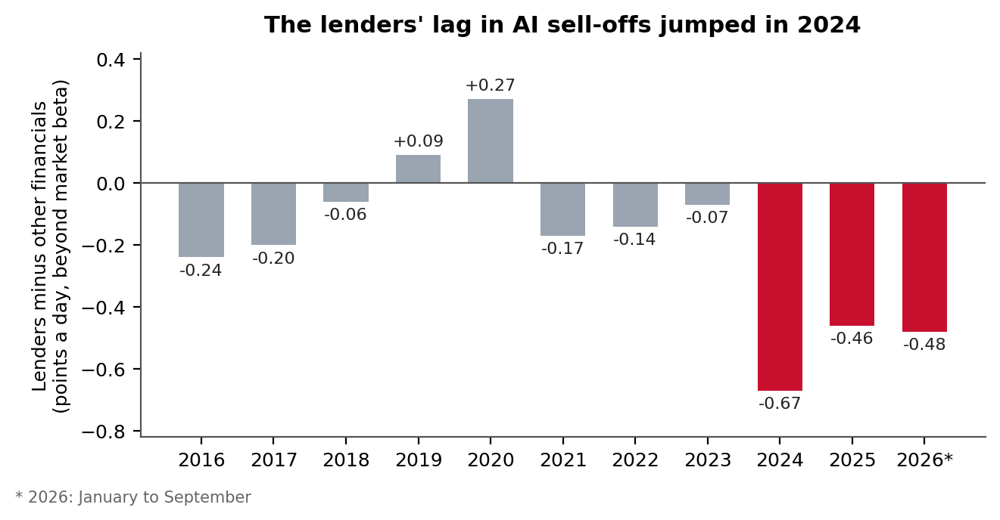
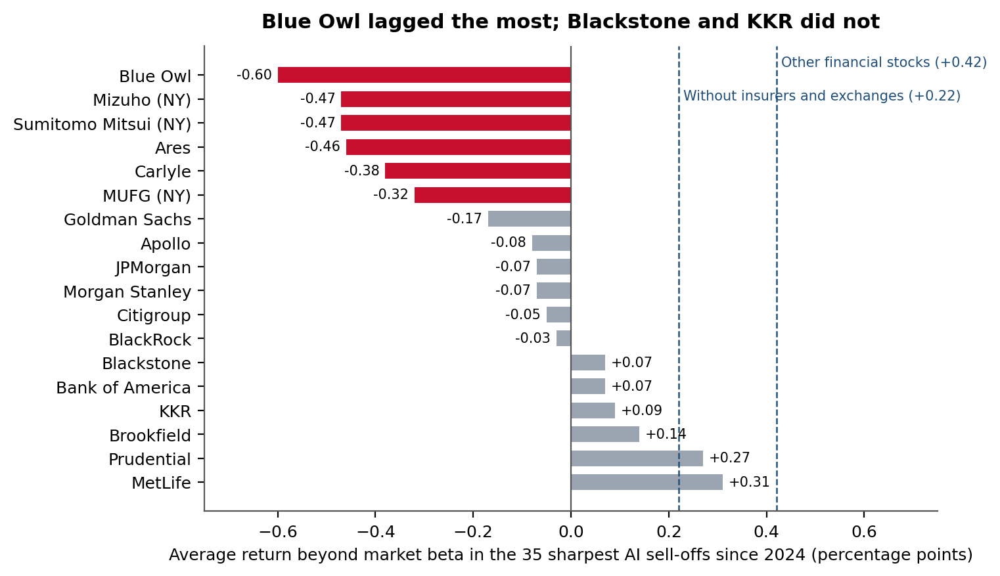
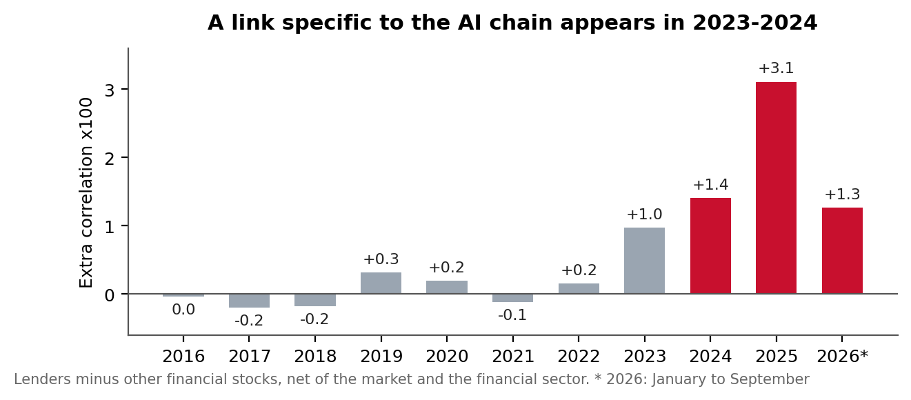
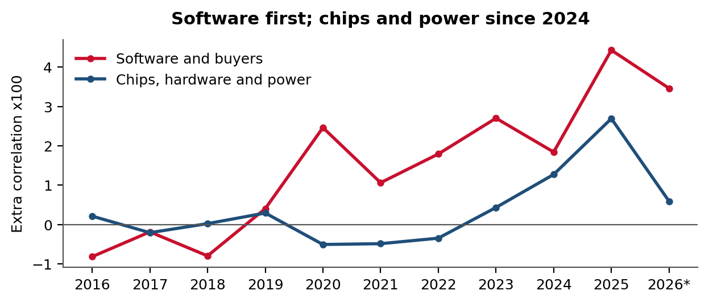
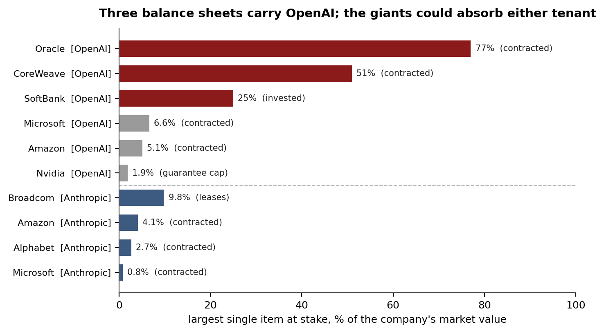
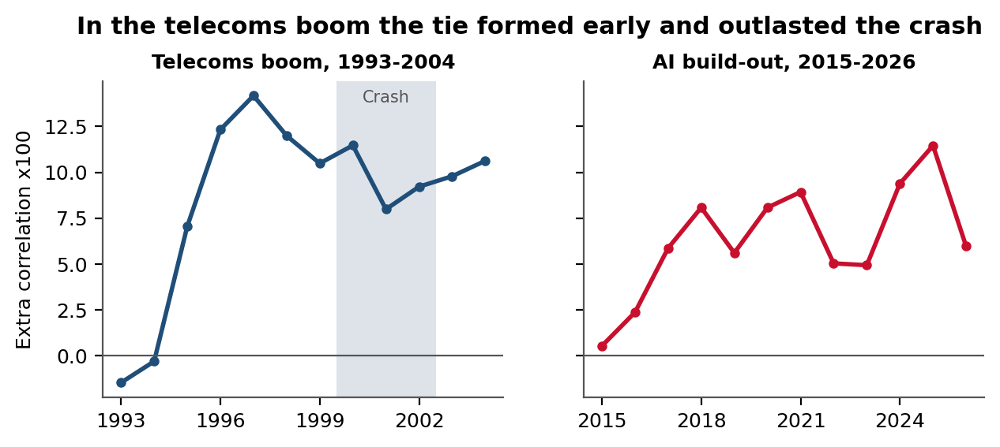

Market evidence on where the off-balance-sheet risk of the AI build-out sits, 2016-2026
The Bank of England has warned that borrowing to build artificial intelligence leaves capital markets more exposed to the technology. It also acknowledges that the guarantees behind data-centre and chip financing make that risk hard to assess. This paper locates that risk from public data. The design comes from soil microbial ecology: every quantity is measured as an excess over a comparison group observed on the same days. Eighteen listed lenders to and investors in AI infrastructure are compared with 24 other financial stocks on the 35 days since 2024 when a basket of 46 AI supply-chain companies fell hardest. Significance comes from reshuffling the groups at random, under rules fixed in advance. The filings of the listed companies that contract with the main AI developers are then weighed against their market value. The debt has spread; the risk has not. Since 2024 the lenders have lagged other financial stocks by 0.54 percentage points a day when AI falls hardest. The gap was absent before 2024 and is concentrated in Blue Owl, Ares and Carlyle. The risk that OpenAI cannot meet its commitments sits with Oracle, CoreWeave and SoftBank, a concentration that S&P also cites in downgrading Oracle. Anthropic's commitments, of similar size, rest on groups able to absorb them. The telecoms boom shows such ties forming early and outlasting a crash. With OpenAI's listing deferred beyond 2026, the paper closes with four listing scenarios and the public measures that will tell them apart within a year.
Keywords: private credit, AI infrastructure, off-balance-sheet financing, counterparty risk, systemic risk, comovement, permutation inference
JEL: G01, G12, G21, G23, G32
On 25 September the Bank of England's Financial Policy Committee concluded that the rapid increase in AI-related debt issuance broadens the exposure of capital markets to developments in AI [1]. Global AI-related issuance had reached around $450bn by early September, more than double the total for 2025. As a growing range of investors and markets fund the build-out, the committee reasoned, exposure to a reassessment of AI earnings spreads with it. It also stated the limit of what it can see. The complex guarantees used to finance data centres and chips, and the circular flows between AI companies, make the risk harder to assess [1].
Those guarantees came to light on 20 September. The Financial Times reported that technology groups had given up to $300bn of them in a year to back the debt of data centres they do not own, most of it outside their balance sheets [2]. A Nikkei study puts the off-balance-sheet obligations of Alphabet, Meta, Microsoft, Amazon and Oracle at about $1.65tn, more than the $1.35tn of debt on their balance sheets [3]. The signals have multiplied since. Japan's financial regulator said it will scrutinise how its largest banks and life insurers finance AI data centres [4]. Carlyle estimated that private credit may need to supply roughly $1tn for AI computing, more than half of what the industry manages [5]. The bonds that finance Meta's Hyperion data centre now pay about 230 basis points over Treasuries, against 185 at launch [6]. The cost of insuring Oracle's debt against default reached a record on 24 September [7]. Michael Burry, who holds bets against several AI stocks, wrote that day that the write-offs could come in 2028 or 2029 [7], and has since moved his bets to shorter horizons [8].
A month before the Financial Times investigation, share prices alone already showed where the load was going. Over a decade, structural weight in the AI supply chain had moved from the buyers of computing power to their suppliers, above all the makers of electrical equipment [9]. The filings then showed through what, and why it cannot be summed. Across 1,187 sentences from 279 filings of 13 companies, the same instrument is disclosed in three ways. Nvidia states a cap of $105bn in the filing made on the day of its deal, and in its quarterly accounts only a fair value it calls not significant; Broadcom publishes a maximum of $29bn and its formula; Alphabet publishes its maximum exposure, which grew 2.6 times in six months [10]. Nothing is hidden, and nothing can be added up.
The Bank of England is right about the debt. The question it cannot answer from the guarantees is where the part of the risk that would hurt first now sits. Van Nieuwerburgh gives the most complete account of how the build-out is financed. From its architecture he argues that the new structures transform risk rather than eliminate it, concentrating it through dependence on a few tenants (the AI developers that rent the computing capacity), opacity and circular credit links [11]. A guarantee of $105bn is worth nothing until the day it is worth everything, and no correlation sees it before then. But someone holds the risk, and both the market and the filings can be asked who. This paper asks both. It finds that the risk has not spread with the debt. The market already separates a small group of AI-dependent lenders from the rest of finance, and the documented exposure to OpenAI, the build-out's central tenant, is concentrated in three companies. The result is a public, reproducible view of the concentration that supervisors describe as hard to see, built from prices anyone can download and filings anyone can read.
The data are daily closing prices, adjusted for dividends and splits, from 1 December 2015 to 1 October 2026 for 154 US-listed shares and ADRs. The AI supply chain is a basket of 46 companies in four blocks, sized as in the August paper [9]. They are chips and hardware (23), software and large buyers of computing (11), makers of electrical equipment (5) and utilities (7). Its exact list was not preserved from August, so the boundary used here was written down anew before any result was computed. A neutral basket of 58 companies in the same sectors outside the chain serves as reference.
The lenders are 18 listed firms that lend to or invest in AI infrastructure: Blackstone, Apollo, KKR, Ares, Carlyle, Brookfield, Blue Owl, BlackRock, JPMorgan, Morgan Stanley, Goldman Sachs, Citigroup, Bank of America, MUFG, Sumitomo Mitsui, Mizuho, MetLife and Prudential. They are compared with 24 financial stocks without that role: regional banks, property and casualty insurers, exchanges, traditional fund managers and consumer lenders. The assignment is a judgement and is reported as such.
Sell-off days are the worst 5% of daily returns of the equal-weighted chain basket between January 2024 and September 2026 (35 days), and between 2016 and 2023 for comparison (92 days). For stock i on day t the return beyond what the market predicts is
with rm,t the return of the S&P 500 ETF and βi,t estimated over the previous 250 days, so that no information after t enters. The gap between lenders L and other financial stocks O over the set of sell-off days S is
A second measure uses all days. In rolling 250-day windows stepped by ten days (248 windows), each financial stock receives a specificity score, its mean absolute correlation with the chain minus its mean absolute correlation with the neutral basket,
and the statistic is the lenders' mean score minus that of the other financial stocks. It is computed on raw returns and again after removing, in each window, the market and an equal-weighted index of the 42 financial stocks. Computed separately against the software block and the chip, hardware and power blocks, it separates two channels. Industry portfolios built from CRSP extend the comparison to the telecoms boom [12]. Exposure to OpenAI is read from the filings and announcements of its listed counterparties and compared with each company's market value.
Inference is by permutation. The 42 financial stocks are reshuffled at random into groups of 18 and 24, 200 times, and the observed statistic is ranked among the reshuffled ones. Unlike interval estimates alone, this respects the strong autocorrelation of overlapping windows [9]. The questions, groups, measures and rules for drawing conclusions were written down and dated before the data were downloaded, and each later choice was dated before it was run. The design, a network read against a matched reference (a comparison group observed on the same days), comes from soil microbial ecology, where the same question is asked of species rather than companies [9].
On the 35 sell-off days since January 2024, when the chain fell 3.4% on average, the lenders did 0.54 percentage points a day worse than the other financial stocks. None of the 200 random reshuffles reaches that gap (Table 1). In the 92 sell-offs of 2016-2023 there was no gap, and on ordinary days since 2024 there is none either: it appears only when AI falls. Year by year, the gap moved between -0.24 and +0.27 points a day from 2016 to 2023 and has been -0.46 or wider in every year since (Figure 1).

Part of the gap comes from the rest of finance holding up rather than from the lenders falling hard. The lenders' own shortfall is small, -0.12 points a day, while the other financial stocks gained +0.42 as money rotated into defensive financials. Removing property insurers and exchanges from the comparison narrows the gap to -0.34 points a day, still beyond every reshuffle and still absent before 2024. This check was made after seeing the result and is reported as such.
Table 1. Gap in sell-offs, return beyond market beta, percentage points a day. p from permutation of group labels.
| comparison | period | lenders or treated | comparison group | gap | p |
|---|---|---|---|---|---|
| 18 lenders vs 24 other financials | 2024-26 (35 days) | -0.12 | +0.42 | -0.54 | 0.005 |
| same | 2016-23 (92 days) | +0.06 | +0.02 | +0.04 | 0.75 |
| without insurers and exchanges (14) | 2024-26 | -0.12 | +0.22 | -0.34 | 0.005 |
| 16 loan vehicles (BDCs) vs 24 | 2024-26 | -0.14 | +0.42 | -0.55 | 0.005 |
| same | 2016-23 | -0.45 | +0.02 | -0.47 | 0.005 |
| Tokyo: 3 megabanks vs 11 regionals | 2024-26 | -0.69 | -0.44 | -0.25 | 0.055 |
| same | 2016-23 | +0.14 | +0.24 | -0.10 | 0.13 |
Blue Owl, which has led private capital's push into AI infrastructure, lagged the most. It was followed by Japan's three megabanks, as traded in New York, and by Ares and Carlyle. Blackstone, KKR, Brookfield and the two life insurers behaved like the rest of finance (Figure 2). On 27 January 2025, when the DeepSeek news knocked 4.9% off the AI basket and 1.4% off the S&P 500, the lenders fell 0.6% on average while other financial stocks rose 1.3%. In Tokyo, on the session after each sell-off, the megabanks did only 0.25 points a day worse than Japan's regional banks, short of the rule fixed in advance. The signal therefore comes from how the US market prices them (Table 1).

The listed private-credit funds that hold the loans, known as business development companies, also fall more than other financial stocks in AI sell-offs: by 0.55 points a day since 2024. But they did almost the same, 0.47 points, in the sell-offs of 2016-2023 (Table 1). That is their usual sensitivity to credit stress. What has changed since 2024 is how the market treats the managers and lenders whose growth now rides on AI, not any loss it sees in their loan books.
The correlation measure of equation (3) shows the same timing. In raw terms the lenders are far more tied to the chain than other financial stocks, but most of that is the market. Net of the market and of the financial sector, the lenders' own tie to the chain is close to zero every year from 2016 to 2022. It starts in 2023, is higher every year since 2024 and is strongest in 2025 (Figure 3). The level in 2024-2026 and its change from 2016-2022 lie beyond every reshuffle in each version. The raw result holds without the Japanese banks, without BlackRock and for the alternative managers alone (Table 2). In money terms, between 2024 and 2026 a 10% fall in the chain went with a fall of about 7.4% in the lenders and 4.4% in other financial stocks. In 2020-2023 the figures were 8.6% and 7.9%. The lenders stayed tied to the chain while the rest of finance loosened its tie.

Table 2. Specificity of the lenders' link to the AI chain, lenders minus other financial stocks. Permutation p = 0.005 in every row, the smallest possible with 200 reshuffles.
| version | level 2024-2026 | change from 2016-2022 |
|---|---|---|
| raw returns | +0.063 | +0.045 |
| net of the market | +0.013 | +0.017 |
| net of the market and the financial sector | +0.020 | +0.020 |
| raw, without the Japanese banks | +0.059 | +0.041 |
| raw, without BlackRock | +0.064 | +0.047 |
| raw, alternative managers only (8) | +0.080 | +0.059 |
Private-credit funds lend heavily to software companies, the businesses that AI may disrupt. As software shares fell between October 2025 and February 2026, the listed lenders most exposed to software did about five percentage points worse than their peers [13]. Computed separately, the lenders' link to software is the larger one and has been present since 2020. Their link to chips, hardware and power is close to zero until 2023, appears in 2024, peaks in 2025 and has eased in 2026 so far (Figure 4). The market first priced the lenders' exposure to their software borrowers; since 2024 it has also priced their exposure to the build-out.

The sell-off measure says which financiers the market already treats as dependent on AI. The filings answer a second question: who holds the contracts of the company at the centre of the build-out. OpenAI is not listed, but its counterparties are, and their filings and announcements say what each has at stake (Table 3). For Nvidia, Microsoft and Amazon, the capital invested in OpenAI, the guarantees given on its behalf and the revenue contracted with it each come to less than 7% of market value. Oracle has more than $300bn of contracted revenue from OpenAI, about three-quarters of its market value, alongside debt of about $125bn and $248bn of data-centre leases not yet commenced [14, 15]. In July S&P cut Oracle's rating to BBB-, one notch above speculative grade, and named its dependence on OpenAI, about half of its $638bn backlog, as a key credit risk [16]. CoreWeave's OpenAI contracts amount to about half of its value, held in an indebted vehicle on which OpenAI has a lien [17]. SoftBank has invested $64.6bn for about 13%, a quarter of its value, partly with borrowed money: it sold $11.1bn of bonds in September to pay the final instalment [18]. Sources for the other rows: [10, 19, 20]. On 26 June the New York Times reported that OpenAI's listing would probably slip to 2027 [21]. On the following session SoftBank fell about 11 percentage points more than the Tokyo market, while Oracle and CoreWeave fell no more than on a typical bad day for AI.
The other large tenant preparing to list shows the opposite distribution. Anthropic's confidential prospectus, as reported on 28 September, commits it to at least $518bn of computing over about a decade, most of it payable whether used or not. That is about $111bn with Google, $110bn with Amazon, $31bn with Microsoft and $161bn of equipment leases tied to Broadcom, which has also agreed to lend it up to $42bn [22, 23]. Set against market value [20, 24], those sums come to 2.7% of Alphabet, 4.1% of Amazon and 0.8% of Microsoft; Broadcom, the most exposed, carries about a tenth of its value in the leases and a further 2.6% in the loan. Commitments of the same order as OpenAI's fall, in this case, on balance sheets built to carry them (Figure 6, Table 3). This is a statement about who would bear a failure, not about the likelihood of one: both tenants carry commitments far above their current revenue.

Table 3. What the listed counterparties of OpenAI and Anthropic have at stake, as a share of their own market value. The columns are different instruments and cannot be added; contracted revenue is not a loss in itself.
| company | invested in or lent to the tenant | guarantee | contracted with the tenant | reading |
|---|---|---|---|---|
| OpenAI | ||||
| Nvidia | 0.5% ($30bn) | 1.9% (cap $105bn) | absorbs | |
| Microsoft | 3.6% (27% stake) | 6.6% ($250bn) | absorbs | |
| Amazon | 1.9% ($50bn) | 5.1% (~$138bn) | absorbs | |
| SoftBank | 25% ($64.6bn, ~13%) | exposed | ||
| CoreWeave | 51% ($22.4bn) | exposed | ||
| Oracle | ~77% (over $300bn) | exposed | ||
| Anthropic | ||||
| Alphabet | 2.7% ($111bn) | absorbs | ||
| Amazon | 4.1% ($110bn) | absorbs | ||
| Microsoft | 0.8% ($31bn) | absorbs | ||
| Broadcom | 2.6% (loan up to $42bn) | ~10% ($161bn leases) | absorbs | |

At industry level, with portfolios that include every listed company of the time, failures included [12], the tie of banks, financial services and insurers to the technology chain rose from 1995. It peaked in 1997 and did not fall away with the crash of 2000-2002. In 1998-2000 it exceeded 1994-1996 by 0.049 (95% interval 0.013 to 0.084, block bootstrap). The same measure for the AI era rises in 2024-2025, with more noise than the firm-level results (Figure 5).
The debt that finances the AI build-out now reaches many more investors and markets, as the Bank of England describes [1]. The risk that would land first does not. Two different groups show the same pattern. On the funding side, the market singles out a few lenders that need AI to grow, and does so precisely when AI falls, a behaviour that did not exist before 2024. On the contract side, what OpenAI's counterparties have at stake is held by three companies. Both views are true at once, and the second is the one the guarantees make hard to see.
The closest prior work is Van Nieuwerburgh's account of the financing architecture, which anticipates the concentration measured here [11]. Next to it stand the BIS evidence on lenders to software [13], the finding that companies sharing a lender move together in the stock market [25], and a comparison of the dotcom and AI cycles through credit spreads [26]. No previous measurement of the lenders' market link to the AI chain against a matched comparison group is known to the author.
This matters now because the industry's leaders have started to talk about slowing down. Three readings circulate. One is safety and regulation, as executives sign voluntary commitments at the White House [27]. Another is marketing ahead of the largest listings Wall Street has seen, as Burry argues [28]. The third is finance: OpenAI missed some revenue and user targets this spring, and its own finance chief worried about paying for computing contracts if growth stalled [29]. Plans to expand its flagship Texas site have also been dropped [30]. OpenAI's own projections, reported in September, show $278bn of negative free cash flow between 2026 and 2030, with revenue rising from $36bn this year to $350bn in 2030 [31]. Of the three readings, only the financial one shows up in the companies' own numbers; the other two rest on statements and interpretations. Whatever the reason, prices say who pays if the spending slows: the managers that need it to grow, and the three companies whose contracts rest on OpenAI.
September also brought a run of capability announcements from OpenAI. On 8 September it said an internal system had solved the Navier-Stokes problem, one of the Millennium Prize Problems, a claim that has divided mathematicians [32]. On 21 September it said the same model had resolved more than a hundred long-standing open problems [33]. These announcements speak to what the models can do, not to whether revenue will cover the contracts. In the weeks that followed, credit moved the other way: Oracle's default insurance reached a new high and the Hyperion bonds traded wider [6, 7]. Credit markets are pricing the second question, not the first.
That is the warning in the data. If spending slows, the cost falls first where the buffers are thinnest, not where the debt is largest. Each of the three has already borrowed against OpenAI's future: Oracle through the debt and leases that carry its data-centre build, CoreWeave through the vehicle that finances its capacity, SoftBank through the bonds that paid for its stake. Suppliers that depend on a few customers pay more for their equity and for their bank loans [34, 35]. That is the channel through which a slowdown reaches Oracle and CoreWeave first, and S&P's downgrade shows it already at work [16]. Nvidia, Microsoft and Amazon would absorb the same shock with a small fraction of their value. Anthropic shows the other side of the same rule. Its commitments are of the same order, but they rest on Alphabet, Amazon, Microsoft and Broadcom, none of which has more than roughly 10% of its value at stake. A tenant's risk depends less on how much it has committed than on who holds its paper.
The same lens reframes the question of an OpenAI listing. It is usually asked as what OpenAI is worth; the more important question is where its risk ends up. Today one shareholder carries OpenAI's valuation risk partly on borrowed money, and two suppliers carry its credit risk in their order books. A listing would spread the first across public investors and give OpenAI its own capital to meet the second. Companies tend to go public not to fund new growth but to rebalance their accounts after a period of heavy investment, reducing leverage and the cost of bank credit afterwards [36]; OpenAI is in exactly that position. That listing has now been deferred. OpenAI's chief executive has said it will not take place in 2026, and the company is seeking at least $30bn in a private bridge round at a valuation of about $1.4tn, with annualised revenue above $40bn [37]. For now the risk therefore stays where it is. Anthropic, which filed confidentially in June, is moving the other way: its listing would put a public price on a tenant whose counterparties can already carry it. Two conditional predictions follow, both checkable within a year. If OpenAI lists, SoftBank's shares should stop reacting to OpenAI headlines as they did in June, because OpenAI's risk will have a price of its own. The lag of the AI-dependent managers in sell-offs, by contrast, should persist, because it rests on their business models rather than on OpenAI. If OpenAI does not list, SoftBank will keep moving with each piece of news about it, and the risk of the central tenant will stay in the same three balance sheets.
A listing does not remove the risk; it changes hands, from a few balance sheets to a broad body of shareholders, including index funds if the companies enter the main indices. Which way it then runs depends on the price. A strong debut would lift those holding stakes (SoftBank, Microsoft, Amazon, Alphabet and Nvidia) and ease those waiting to be paid (Oracle, CoreWeave and Broadcom), since the tenants would then have capital of their own. A weak one, below the last private round or falling after the listing, would hit SoftBank first, whose shares fell most on the news of the delay. It would mark down Microsoft's stake and carry the doubt about payment to Oracle and CoreWeave, and then to the chip suppliers whose revenue depends on the spending. Burry's positions sit on that second path. He holds put options on Nvidia, Oracle, the semiconductor index and Applied Materials expiring in June 2027 [8]. On 29 September he wrote that he wished markets would fall hard enough to stop both listings, which he says would absorb and then destroy trillions of dollars of capital [38]. Others hold the opposite positions. In July, traders on Polymarket priced Anthropic to list before OpenAI at 87% and gave an OpenAI listing in 2026 about one chance in five [39]. An independent forecast places Anthropic's debut around late October at about $1.8tn, and OpenAI's in mid-2027 [40]. Funds open to small investors that hold shares ahead of the listing, and contracts on OpenAI's listing price, are bets on the strong path [41]. Each row of Table 4 below already has money behind it. Burry's reading and this paper's describe the same operation from opposite ends. For him a listing hands the risk to savers; here it disperses a risk now held by three companies. Both hold at once: the same listing would leave the system less fragile and savers more exposed.
Two other financing models make the same point from outside. xAI, the third large tenant, has already taken its risk to the public market. SpaceX absorbed it in February, in a deal that valued the combined company at $1.25tn, and listed in June [42, 43]. China has gone further in that direction. Its frontier labs raised about 179bn yuan of equity in the first eight months of 2026, against 9bn yuan of private funding in all of 2025. Its large platforms, meanwhile, borrow more, and part of the spending on chips and servers comes from state-linked sources [44]. Zhipu and MiniMax listed in Hong Kong in January, ahead of OpenAI and Anthropic [45], and DeepSeek took in the state AI investment fund as a shareholder with voting rights [46]. There, the tenants' risk sits with public shareholders and the state, priced from the start; in the United States it sits, out of sight, with a few suppliers and private credit. The Chinese sums are smaller by an order of magnitude, but the lesson holds: where the risk ends up depends on how the spending is financed, not on how much is spent.
None of this dates a break, or says one will come, but the pattern is old. Perez describes each technological revolution as an installation period financed by speculative capital, a frenzy, a turning point that is usually a crash, and a deployment in which the technology finally pays [47]; Van Nieuwerburgh estimates that the AI build-out will absorb about 3.6% of US GDP a year between 2025 and 2032, more than the canal, railroad, electrification, highway and telecommunications booms [11]. Investors in the British railway mania of the 1840s had the figures to see that demand would not cover the expected revenue, and set them aside [48]. Each element of this paper has a precedent. The financier tied to one project is Jay Cooke, whose bank failed in September 1873 over the bonds of the Northern Pacific and set off the Panic of 1873 [49]. The opaque pyramid is Samuel Insull's utility holding companies, which collapsed in 1932 and led to the Public Utility Holding Company Act of 1935 and the disclosure rules that followed [50]. The lenders concentrated in the boom sector are Penn Square, which sold participations in its oil and gas loans to 53 banks before failing in 1982, and Continental Illinois, its largest buyer, rescued in 1984 [51]. The supplier that funds its customers is the telecoms equipment industry, whose nine largest makers had lent about $25.6bn to their clients by the end of 2000 and lost between a third and four-fifths of it [52]. In that boom, as shown above, finance tied itself to the build-out early and stayed tied through the crash. In none of these cases was the technology false: the railways, the grid and the fibre carried traffic for decades. The losses fell on those who financed the peak, and they fell in concentrated form. What the measures here can do is follow the next step, the listings, and tell within a year which path they take.
The calendar is now set. Anthropic's listing is expected after the US midterm elections in November and OpenAI's in 2027 [53]. SpaceX raised $75bn in June, more than twice the previous record [43], and one estimate puts the three listings together above $200bn [54]. Whether public markets can absorb two more of that size is itself an open question, and the first to list will set the reference price for the second. The rules decide who buys first. Nasdaq now admits the largest new listings to the Nasdaq-100 after fifteen trading days and FTSE Russell after five, so funds tracking those indices would have to buy within weeks; S&P Dow Jones Indices declined in June to relax its rules, and neither tenant can enter the S&P 500 before twelve months of trading and four quarters of positive earnings [55]. The savers who would carry the risk first are therefore those in the Nasdaq and Russell trackers, not the S&P 500. Table 4 sets out the four paths and how each would show up in public data. Read together, its measures look at the build-out from outside rather than from within: credit rather than shares, cash rather than announcements, counterparties rather than protagonists, other financing models, and history.
Table 4. Four listing scenarios, who gains and who loses in each, and the public measure that distinguishes them. Each can be checked within a year.
| scenario | who gains | who loses | how it is measured |
|---|---|---|---|
| Strong listing, above the last private round | SoftBank, Microsoft, Amazon, Alphabet, Nvidia; Oracle, CoreWeave and Broadcom see payment risk fall | index savers who buy at the top, if prices later fall | listing price against the last private round and first-month return; returns of the exposed companies against the chain, as in equation (1); SoftBank's reaction to OpenAI news should fade |
| Weak listing, below the last round or falling after it | holders of put options on the chain | SoftBank first, then Microsoft's stake, Oracle, CoreWeave and the chip suppliers | the same price measures; Oracle's rating, one notch above speculative grade, and its default insurance; CoreWeave and Hyperion bond spreads |
| Delay, with further private rounds | the tenants, whose private valuations are not tested | no one at once; the risk stays with Oracle, CoreWeave and SoftBank | SoftBank keeps reacting to OpenAI news; the lenders' sell-off gap of equation (2) persists; terms of the private rounds |
| A market fall that stops the listings | holders of put options on the chain | the whole chain, the AI-dependent managers, and suppliers that must keep financing their customers | the gap of equation (2) widens; bond spreads of the data-centre vehicles; Oracle's rating |
In every scenario one further measure would help supervisors and investors alike: that companies giving guarantees disclose, every quarter, the maximum they could have to pay. Two of the three examined in the filings already do; the number exists in every case, and what varies is where it is put [10]. Making it comparable requires consistent rules rather than new ones.
The measures read share prices, not balance sheets, and describe the market's view of the lenders, not how much they have lent or to whom; supervisors see that with confidential data [56, 57].
Large banks also earn from the AI boom through trading, listings and debt issuance [58], and prices cannot separate revenue from credit risk.
Correlations rise mechanically in turbulent markets [59]; same-window comparison against other financial stocks and removal of market and sector moves reduce this effect without guaranteeing its removal.
The groups and the boundary of the chain are the author's definitions, and the sample consists of today's listed companies.
Part of the sell-off gap reflects defensive financials rising, and the check that removes them was not planned in advance.
The exposure table combines figures from different sources and dates. The revenue a company has contracted is not what it would lose, and no company breaks down by customer the leases and debt that a tenant failure would strand.
The telecoms comparison is at industry level. A study of WorldCom's collapse found that its creditors' shares barely reacted to the news [60], so a sustained tie is not the same as a sharp reaction.
The SoftBank reaction to the listing report is a single session and is described, not tested.
Anthropic's figures come from press reports of a confidential prospectus that has not yet been made public.
Data processing, analysis code and drafting were assisted by Claude (Anthropic). Anthropic is one of the companies discussed in Section 3.6; its figures are taken from published reports of its prospectus and treated by the same rules as the others. Every figure comes from the stated data and the released code and was checked by the author.
The author holds no positions in the companies discussed and received no funding for this work.
Code, derived series, dated pre-registrations, the counterparty map with its sources, and results: github.com/Acedoo/chips-and-risk, folder research/2026-10-sharp-end-of-ai-debt. Raw prices are not redistributed and are regenerated by the released download scripts. The analysis uses standard statistical measures; the code is released under the MIT licence.
[1] Bank of England. Record of the Financial Policy Committee meeting on 25 September 2026. Published 30 September 2026.
[2] McMorrow, R., Chan, M., Taffe, M. Big Tech uses guarantees to keep $300bn of AI exposure off balance sheets. Financial Times, 20 September 2026.
[3] U.S. News & World Report. Big Tech's AI-fueled $1.65 trillion hidden debt crisis. August 2026, reporting a Nikkei study of Alphabet, Meta, Microsoft, Amazon and Oracle.
[4] Bloomberg. Japan regulator is boosting scrutiny of AI data center financing. 25 September 2026.
[5] Bloomberg. Carlyle warns private credit's AI push raises concentration risk. 1 October 2026.
[6] McGeever, J. Are AI credit cracks a warning, or a 'buy' signal? Reuters, 29 September 2026.
[7] TheStreet. Michael Burry just put a date on Big Tech's AI reckoning. 27 September 2026, reporting his Substack post of 24 September.
[8] CNBC. Michael Burry believes the AI bubble 'may burst' sooner than he first believed. 28 September 2026.
[9] Acedo, A. Chips and Megawatts: structural attribution in the AI supply chain, 2015-2026. SSRN working paper 7307362, August 2026.
[10] Acedo, A. Three ways to disclose the same guarantee: what the filings of the AI supply chain say about off-balance-sheet exposure. Working note, 23 September 2026. github.com/Acedoo/chips-and-risk, folder research/2026-09-guarantees-note.
[11] Van Nieuwerburgh, S. Financing the AI buildout. Brookings Papers on Economic Activity, Fall 2026, conference draft of 23 September 2026. SSRN 6444363.
[12] French, K. R. Data Library: 49 industry portfolios (daily) and Fama/French research factors (daily), built from CRSP, data to August 2026. Tuck School of Business, Dartmouth College.
[13] Doerr, S., Eren, E., Krohn, I., Todorov, K. Private credit's software lending meets AI disruption. BIS Quarterly Review, 16 March 2026.
[14] Oracle. Fiscal year 2026 third-quarter and fourth-quarter results, 10 March and 10 June 2026; Northwood, F., Oracle and the AI boom's hidden debt bomb, Fast Company, 23 May 2026.
[15] Khan, R. Oracle's AI bet: equity wins and credit waits. Forbes, 15 January 2026.
[16] S&P Global Ratings. Rating action on Oracle Corp., lowered to BBB- from BBB, 9 July 2026, as reported by Heise online, S&P downgrades Oracle to BBB-, July 2026.
[17] CoreWeave. Quarterly report on Form 10-Q, 13 November 2025; CoreWeave newsroom, expanded OpenAI agreements totalling about $22.4bn.
[18] Reuters. SoftBank completes final phase of $30 billion investment in OpenAI. 1 October 2026; CNBC, SoftBank shares jump after $11.1 billion bond issuance to fund OpenAI bet, 24 September 2026.
[19] Microsoft. The next chapter of the Microsoft-OpenAI partnership. 28 October 2025.
[20] Presenc. OpenAI compute commitments tracker, May 2026, compiling company announcements of the March 2026 funding round; market values from The Motley Fool, companiesmarketcap.com, capital.com and GuruFocus, September-October 2026.
[21] CM Elite Group. Oracle and CoreWeave fall as OpenAI IPO delay report rattles AI stocks. 26 June 2026, citing the New York Times.
[22] TheStreet. Anthropic's IPO filing reveals a staggering AI bet. 30 September 2026, reporting the confidential prospectus as seen by Reuters on 28 September 2026.
[23] Reuters. Broadcom to lend Anthropic up to $42 billion to lease its chips, filing says. 1 October 2026, via Investing.com.
[24] Stock Analysis. Alphabet market capitalization, 1 October 2026; Robinhood, Broadcom key statistics, 2 October 2026.
[25] Eufinger, C., Lin, L. X., Raponi, V., Wang, H. Common lenders and borrower return comovement. SSRN working paper 6239718, 2026.
[26] Quoniam Asset Management. Credit spreads, dispersion and the detection of technology bubbles: Dotcom era vs AI cycle. 2026.
[27] Stocktwits. Michael Burry says markets 'should tank hard' to stop OpenAI, Anthropic IPOs. 30 September 2026, reporting the White House self-regulation accord.
[28] TheStreet. Michael Burry reveals his verdict on the ongoing AI bubble. 16 September 2026, reporting his post of 14 September.
[29] Reuters. Oracle, CoreWeave lead AI selloff on OpenAI growth concerns. 28 April 2026, citing the Wall Street Journal.
[30] DatacenterDynamics. Oracle stood up 400MW of data center capacity in latest quarter, has secured 10GW of power for the next three years. 2026, including the dropped expansion of the Abilene site.
[31] Investing.com. OpenAI expects $278 billion cash burn through 2030. 18 September 2026, citing a company presentation reported by the Financial Times.
[32] Zhao, C. OpenAI breakthrough triggers 'existential crisis' in math. Science, 15 September 2026.
[33] Tech Insider. OpenAI claims 100+ math problems solved in 24 days. 22 September 2026, compiling reports of the announcement of 21 September.
[34] Dhaliwal, D., Judd, J. S., Serfling, M., Shaikh, S. Customer concentration risk and the cost of equity capital. Journal of Accounting and Economics 61(1), 23-48, 2016.
[35] Campello, M., Gao, J. Customer concentration and loan contract terms. Journal of Financial Economics 123(1), 108-136, 2017.
[36] Pagano, M., Panetta, F., Zingales, L. Why do companies go public? An empirical analysis. Journal of Finance 53(1), 27-64, 1998.
[37] CoinDesk. OpenAI seeks $30 billion in funding at $1.4 trillion valuation after delaying IPO. 30 September 2026, citing Bloomberg.
[38] Benzinga. Michael Burry says markets should 'tank hard' to stop OpenAI, Anthropic from IPOs. 30 September 2026, reporting his posts on X of 29 September 2026.
[39] Yahoo Finance. What betting markets really think about the OpenAI, Anthropic, and Databricks IPOs. July 2026, on Polymarket prices as of 7 July 2026.
[40] FutureSearch. Anthropic and OpenAI IPO dates and valuations: forecasts and odds. Updated 29 August 2026.
[41] The Motley Fool. Can you invest in Anthropic in 2026? September 2026; CMC Markets, OpenAI IPO: what investors need to know in 2026, on its pre-IPO market.
[42] TechCrunch. Elon Musk's SpaceX officially acquires Elon Musk's xAI, with plan to build data centers in space. 2 February 2026.
[43] NPR. SpaceX blasts off with a record-breaking $75 billion IPO. 11 June 2026.
[44] Rhodium Group. Examining China's AI financing. September 2026.
[45] Rest of World. Chinese AI unicorns beat Silicon Valley giants in race to go public. 6 January 2026.
[46] Fortune. Moonshot, DeepSeek, and the great Chinese AI IPO rush. 23 July 2026.
[47] Perez, C. Technological Revolutions and Financial Capital: The Dynamics of Bubbles and Golden Ages. Edward Elgar, Cheltenham, 2002.
[48] Odlyzko, A. Collective hallucinations and inefficient markets: the British Railway Mania of the 1840s. Working paper, University of Minnesota, 15 January 2010. SSRN 1537338.
[49] Smithsonian Magazine. How one robber baron's gamble on railroads brought down his bank and plunged the U.S. into the first Great Depression. September 2023.
[50] McDonald, F. Insull. University of Chicago Press, Chicago, 1962; Public Utility Holding Company Act of 1935.
[51] Federal Deposit Insurance Corporation. Continental Illinois and "too big to fail". In History of the Eighties: Lessons for the Future, volume 1, chapter 7. FDIC, Washington, 1997.
[52] CFO Magazine. What goes around. March 2003, reporting McKinsey & Co. estimates of telecoms equipment suppliers' customer financing.
[53] TechSpot. 'The Big Short' investor says he's rooting for a crash just to stop OpenAI and Anthropic's IPOs. 2 October 2026, citing Reuters on the expected timing of both listings.
[54] IG. SpaceX, OpenAI, Anthropic and more: 2026's IPO deals reshaping markets. May 2026, estimate assuming a 5% free float.
[55] ETF Stream. S&P 500 will not adopt fast-entry for SpaceX, Anthropic and OpenAI IPOs. June 2026, on the decision of S&P Dow Jones Indices of 4 June 2026 and the fast-entry rules of Nasdaq and FTSE Russell.
[56] Aldasoro, I., Doerr, S., Rees, D. Financing the AI boom: from cash flows to debt. BIS Bulletin 120, 7 January 2026.
[57] Federal Reserve Bank of Chicago. Tail risk for banks posed by investments in generative artificial intelligence. Chicago Fed Insights, February 2026.
[58] CNBC. The AI boom just found two new winners: Goldman Sachs and JPMorgan Chase. 14 July 2026.
[59] Forbes, K. J., Rigobon, R. No contagion, only interdependence: measuring stock market comovements. Journal of Finance 57(5), 2223-2261, 2002.
[60] Akhigbe, A., Martin, A. D., Whyte, A. M. Contagion effects of the world's largest bankruptcy: the case of WorldCom. Quarterly Review of Economics and Finance 45(1), 48-64, 2005.
This document is an empirical analysis of publicly traded securities. It is not investment advice and is not a recommendation to buy or sell any security. Data: daily closes of 154 US-listed shares and ADRs, December 2015 to October 2026; Tokyo-listed banks; Kenneth French industry portfolios to August 2026; company filings and announcements.